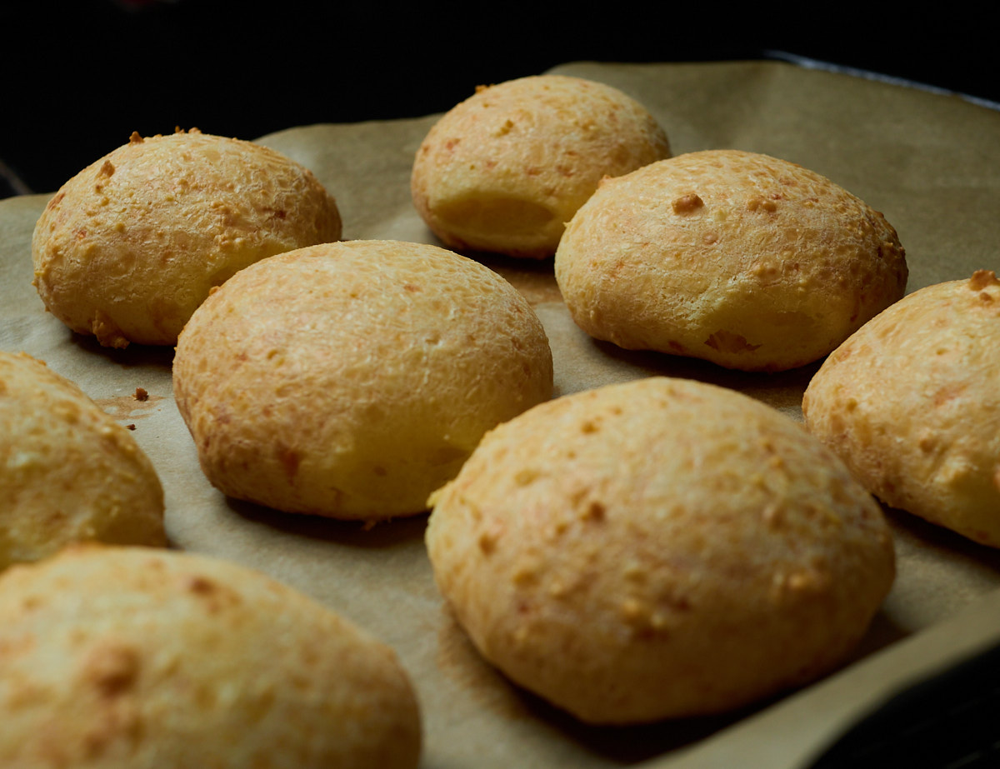

THE BEST GLUTEN FREE CHEESE BREAD YOU HAVEN’T TRIED IS HERE
The best thing about being curious or just living in an area where it’s multicultural, is that you find out about a cheese bread that taste so good and is gluten free. Bonus.
Now just because it’s gluten free doesn’t mean you shouldn’t watch how many of these you eat in a row. Let me know how it turns out!
Disclaimer: I’m still learning especially baking so my measurements may not be industry standard 🙂.
Equipment
- Oven
- Sauce Pan
- Bowl
- Scale
- Ramekin
- Grater
Ingredients
- 143 g Tapioca Flour
- 2.3 oz Olive Oil (or any other neutral tasting oil)
- 3 oz Milk (I use milk alternatives like almond)
- 1/2 Tsp Salt (I use kosher salt)
- 48 g Parmesan cheese (Aged cheese to grate or grated)
- 48 g Mozzarella cheese (Monterrey Jack or any other can work as well)
- 1 large egg
Instructions
- Preheat oven to 400F or 204C
- Place the tapioca flour in a mixing bowl.
- Heat milk and oil in a sauce pan. Let simmer for a couple of seconds.
- Add the hot milk/oil to the tapioca flour and mix well. Once done, set mixing bowl aside for 4 minutes or so while you prepare the other ingredients.
- Whip the egg on a separate small container like a ramekin, put aside, then grate the cheeses.
- Add all the ingredients back to the mixing bowl.
- Mix vigorously – the better you mix it and get a dough-like consistency the nicer the cheese bread will come out. This part can become difficult depending on the tool you use but it's worth it!
- Prepare a baking sheet lined with parchment paper or use a silicone mat.
- In case the dough is too sticky, you can use two spoons to grab and shape the dough into a small ball directly on the baking sheet. If the dough isn't too sticky, wet your hands a bit with water then shape the dough with your hands. Shape into a small ball of around 108g. This usually produces 4 small pieces of bread.
- Bake for 20-22 minutes on the mid or top rack until bread is lightly browned on top.
- Once the bread is done, place the baking sheet on a cooling rack for a few minutes. Enjoy this delicious cheese bread warm!